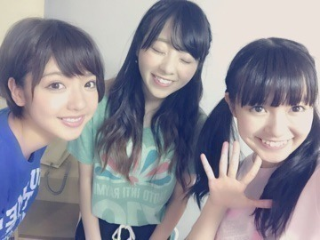
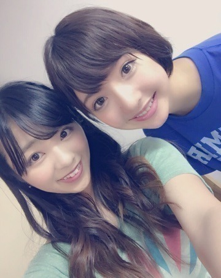
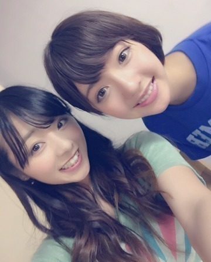
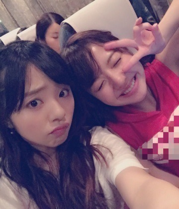
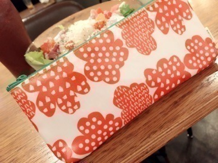

おつかれさまに。♡
最近暑さが引いてきたような...．
ツアー,広島LIVEが終わった直後にぱしゃり． 広島出身のまあやとめぇと♡

広島に来てくださった皆さん,ありがとうこざいました！ 皆さんのおかげで最高に楽しいLIVEになりました！！ 本当に楽しかったです（＾Ｏ＾）
広島は涼しくて,ホテルでもエアコンなしで過ごせましたぁ♡ 道も広いイメージ.＊
帰りにもみじ饅頭を沢山もらって,私は1人暮らしなので、あれから毎日の様に食べてます．
むしろもみじ饅頭で生活してる様なもんです．笑
２日間,ホテルの相部屋は
まひの可愛いー可愛いーまあやでした♡
まあやはいー子。まあや族もいー子。笑

もぉ1枚．

まあやの家族にも会えましたぁぁ．
相変わらずそっくりでした♡
少し前に,まあやの家族とTV電話したんだけど,お母さんもお父さんもお兄ちゃんもええ人で,まあや家大好きなんですよね...。
バスの中でぇ～♡

はーい,とゆーことで！
ツアーも前半8公演が終わり,後半８公演が始まります！ 福岡,大阪,東京ですね！！
次は福岡♡♡
皆まっててねーーーん⊂((・x・))⊃
よろしくねぇ。
最近買った,my歯ブラシ入れ♡ノわら

ほなね。